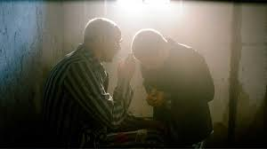
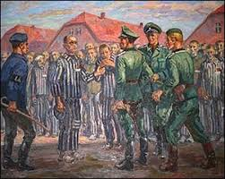
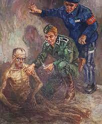

En los días más oscuros de la Segunda Guerra Mundial, en medio del horror y la crueldad desenfrenada, surge un destello de humanidad y sacrificio inquebrantable encarnado en la figura de Maximiliano Kolbe, un franciscano polaco cuya historia conmueve al alma.
Dentro de las inmundas alambradas del campo de concentración de Auschwitz, Maximiliano y sus compañeros prisioneros eran testigos y víctimas de la brutalidad diaria impuesta por los nazis. Pero en un momento particular, cuando un prisionero intentó escapar, el campamento se llenó de terror. Como castigo y advertencia a otros prisioneros, los nazis eligieron a diez hombres al azar para ser ejecutados.
Entre los elegidos se encontraba un padre de familia que lloraba por sus hijos. Entonces, en un acto de asombroso heroísmo, Maximiliano Kolbe se adelantó. Desafiando la crueldad que los rodeaba, pidió tomar el lugar del padre. El oficial nazi, sorprendentemente, aceptó su oferta.
Los diez hombres fueron condenados a morir en un oscuro búnker, donde el hambre y la sed los asediaban. Pero incluso en esa desesperación, Maximiliano irradiaba una esperanza y un coraje inquebrantables. Juntos, cantaron himnos, oraron y compartieron palabras de aliento que desafiaban al mismo infierno que los rodeaba.
Días se convirtieron en noches y algunos prisioneros murieron, pero Maximiliano persistió, cuidando de los enfermos y reconfortando a los afligidos. Después de semanas, solo quedaban cuatro sobrevivientes, entre ellos Maximiliano. Los nazis impacientes administraron inyecciones letales para acelerar su cruel agenda.
Sin embargo, incluso en esos últimos momentos, el alma de Maximiliano permaneció imperturbable. A medida que la vida se desvanecía de su cuerpo, sus palabras se elevaban, hablándoles a sus compañeros sobre la eternidad, el paraíso y el amor inquebrantable de Dios. Su rostro estaba iluminado por una sonrisa de serenidad, ofreciendo un último acto de compasión y esperanza.
La historia de Maximiliano Kolbe es una llama ardiente en la oscuridad más profunda de la humanidad. Su sacrificio inconmensurable y su capacidad para encontrar la luz y el amor incluso en medio de la adversidad extrema nos retan y nos inspiran. Nos enseña que el poder del amor y la compasión puede superar la maldad más profunda y que nuestras acciones pueden tener un impacto duradero en el mundo, incluso en los momentos más oscuros.